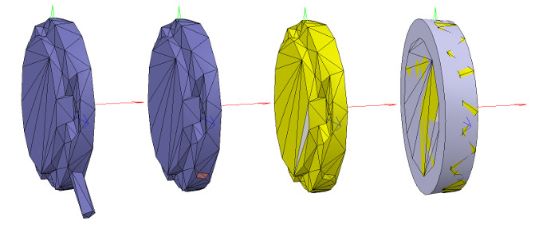
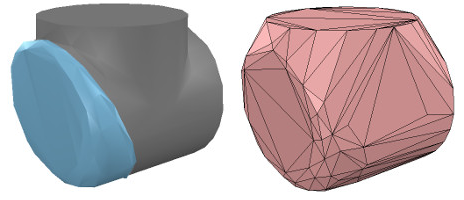
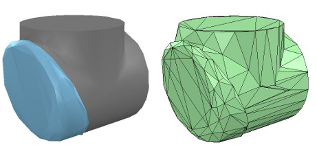
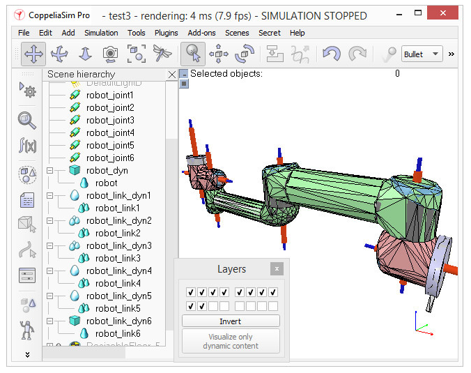

NX12 <<
Previous W17
建立動態形狀
如果我們希望我們的機器人能夠動態啟用，即對碰撞，跌落等做出反應，那麼我們需要適當地創建/配置形狀：形狀可以是：
◎動態或靜態：動態（或非靜態）形狀會掉落並受到外力/扭矩的影響。 另一方面，靜態（或非動態）形狀將保持不變，或跟隨其根源在場景層次中的移動。
◎可響應或不可響應：可響應形狀會引起與其他可響應形狀的碰撞反應。 如果它們是動態的，它們（和/或它們的對撞機）的運動將受到影響。 另一方面，不負責任的形狀如果與其他形狀發生碰撞，則不會計算碰撞響應。
以上說明了兩點。 負責任的形狀應盡可能簡單，以實現快速穩定的仿真。 物理引擎將能夠以不同的速度和穩定性模擬以下5種類型的形狀：
◎純形狀：純形狀將穩定並由物理引擎非常有效地處理。 缺點是純形狀的幾何形狀受到限制：主要是長方體，圓柱體和球體。 如果可能的話，將其用於與其他物品接觸時間較長的物品（例如，人形機器人的腳，串行機械手的底座，抓手的手指等）。 可以使用[菜單欄->添加->基本形狀]創建純形狀。
◎純複合形狀：純複合形狀是幾個純形狀的組合。 它的性能幾乎與純形狀一樣，並具有相似的特性。 可以通過對幾個純形狀進行分組來生成純複合形狀[菜單欄->編輯->分組/合併->分組所選形狀]。
◎凸形狀：當由物理引擎處理時，凸形狀的穩定性會降低一些，而計算時間也會增加。 與純形狀相比，它允許使用更通用的幾何形狀（僅要求：它必須是凸形的）。 如果可能，將凸形用於偶爾與其他物品接觸的物品（例如，機器人的各個鏈接）。 可以使用[菜單欄->添加->選擇的凸包]或[菜單欄->編輯->將選擇變形為凸形]生成凸形。
◎複合凸形狀或凸分解形狀：凸分解形狀是幾個凸形狀的組合。 它的性能幾乎與凸形相同，並具有相似的特性。 可以通過將多個凸形分組[菜單欄->編輯->分組/合併->分組選定的形狀]，並使用[菜單欄->添加->選擇的凸分解...]來生成凸分解形狀。 ]，或使用[菜單欄->編輯->將選擇變形到其凸分解...]。
◎隨機形狀：隨機形狀是既非凸形也不是純淨的形狀。 它通常具有較差的性能（計算速度和穩定性）。 盡量避免使用隨機形狀。
因此，優先順序為：純形狀，純複合形狀，凸形，複合凸形，最後是隨機形狀。 確保還閱讀此頁面。 對於要構建的機器人，我們將其基座設為純圓柱體，將其他鏈接設為凸形或凸形分解形狀。
我們也可以將動態啟用的形狀用作機器人的可見部分，但是看起來可能不夠好。 因此，相反，我們將為在本教程第一部分中創建的每個可見形狀構建一個動態啟用的副本，該副本將保持隱藏狀態：隱藏部分將代表動態模型，並由物理引擎專用，而 可見部分將用於可視化，還用於最小距離計算，接近傳感器檢測等。
我們選擇對像機器人，將其複制並粘貼到新場景中（以保持原始模型不變），然後啟動三角形編輯模式。 如果對像機器人是複合形狀，我們首先必須將其取消組合（[菜單欄->編輯->分組/合併->取消組合所選形狀]），然後合併各個形狀（[菜單欄-> 在啟動三角形編輯模式之前，請編輯->分組/合併->合併選定的形狀]）。 現在，我們選擇代表電源線的幾個三角形，並將其刪除。 然後，選擇該形狀中的所有三角形，然後單擊“提取圓柱體”。 現在我們可以離開編輯模式，我們的基礎對象表示為純圓柱體：

[純圓柱體生成過程，在三角形編輯模式下]
我們將新形狀重命名（在場景層次中雙擊其名稱）為robot_dyn，將其分配給可見性層9，然後將其複製到原始場景。 其餘鏈接將建模為凸形或複合凸形。 現在，我們選擇第一個移動鏈接（即對象robot_link1），並使用[菜單欄->添加->選擇的凸包]從中生成凸形。 我們將其重命名為robot_link_dyn1並將其分配給可見性層9。當提取凸包並沒有保留足夠的原始形狀細節時，您仍然可以手動從其組成元素中提取多個凸包，然後將所有凸包與 [菜單欄->編輯->分組/合併->對選定形狀進行分組]。 如果這似乎有問題或很耗時，則可以使用[菜單欄->添加->選擇的凸分解...]自動提取凸分解的形狀：

[原始形狀和凸形吊墜]

[原始形狀和凸形分解形狀吊墜]
現在，我們對所有剩餘的機器人鏈接重複相同的過程。 完成後，我們將每個可見的形狀附加到其相應的不可見的動態吊墜上。 為此，我們先選擇可見的形狀，然後按住控制鍵並單擊以選擇其動態吊墜，然後選擇[菜單欄->編輯->將最後選擇的對象設為父對象]。 通過將可見形狀拖動到場景層次中的動態吊墜上，可以實現相同的結果：

[可見的形狀附加到動態吊墜上]
我們仍然需要注意一些事項：首先，由於我們希望動態形狀僅對物理引擎可見，而對其他計算模塊不可見，因此在對象通用屬性中取消選中動態形狀的所有對象特殊屬性。
然後，我們仍然必須將動態形狀配置為動態且可響應的。我們在形狀動力學屬性中執行此操作。首先選擇基本動態形狀（即robot_dyn），然後檢查“主體是可響應的”項。啟用前四個“本地可響應掩碼”標誌，並禁用後四個“本地可響應掩碼”標誌：對於連續的可響應鏈接不要彼此衝突非常重要。對於我們機器人中的第一個移動動態鏈接（即robot_link_dyn1），我們還啟用了“身體可響應”項，但是這次我們禁用了前4個“本地可響應掩碼”標誌，並啟用了後4個“本地可響應掩碼”標誌。我們對所有其他動態鏈接重複上述過程，同時始終交替使用Local Responsible Mask標誌：一旦定義了模型，則連續的機器人動態形狀在彼此交互時不會產生任何碰撞響應。嘗試始終以這樣一種構造結束：機器人的動態基礎和機器人的動態最後一個鏈接僅啟用了前4個“本地可響應掩碼”標誌，以便我們可以將機器人附加到移動平台，或附加一個抓取器連接到機器人的最後一個動態鏈接，而沒有動態碰撞干擾。
最後，我們仍然需要將動態形狀標記為“身體是動態的”。 我們也在形狀動力學屬性中執行此操作。 然後，我們可以手動輸入質量和慣性張量屬性，或者通過單擊“計算選定凸形的質量和慣性屬性”來自動計算（推薦）那些值。 還請記住這一點以及該動態設計注意事項。 機器人的這種動態基座是一種特殊情況：大多數時候，我們希望機器人的基座（即robot_dyn）是非動態的（即靜態），否則，如果單獨使用，則機器人可能會在運動過程中掉落。 但是，一旦我們將機器人的底座連接到移動平台上，我們就希望底座變得動態（即非靜態）。 我們通過啟用“如果獲取父項時設置為動態”項，然後禁用“主體為動態”項來做到這一點。 現在運行仿真：除了機器人的基座之外，所有動態形狀都應下降。 附加的視覺形狀將跟隨其動態吊墜。
NX12 <<
Previous